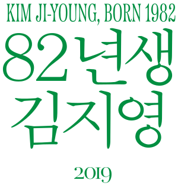
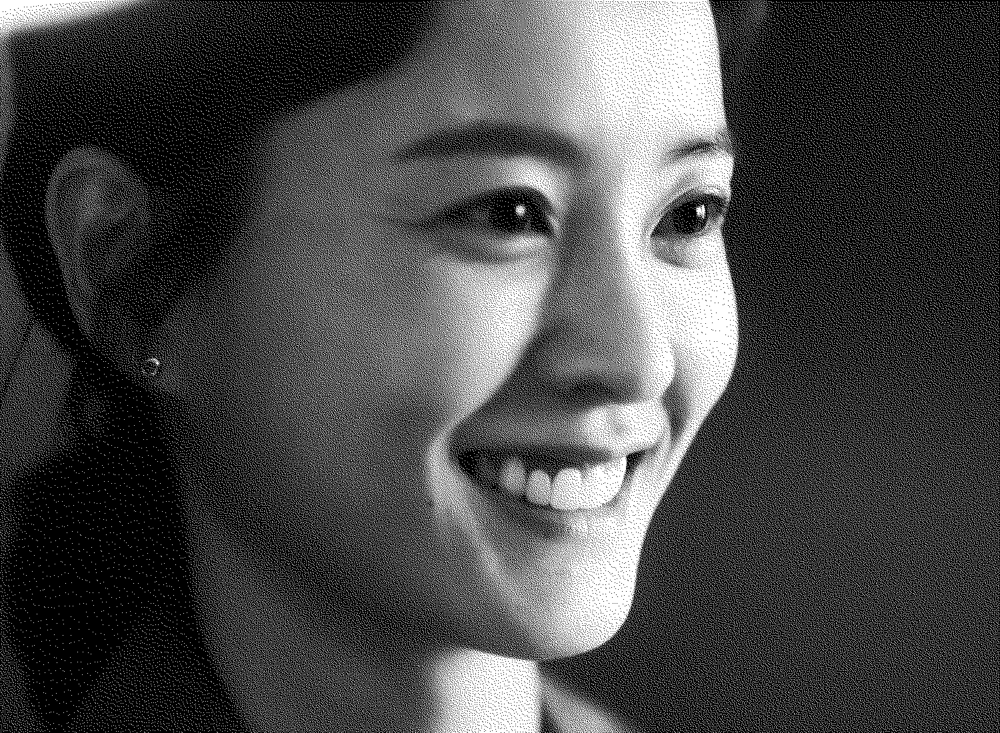
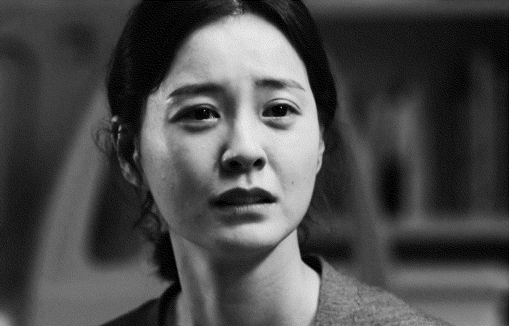
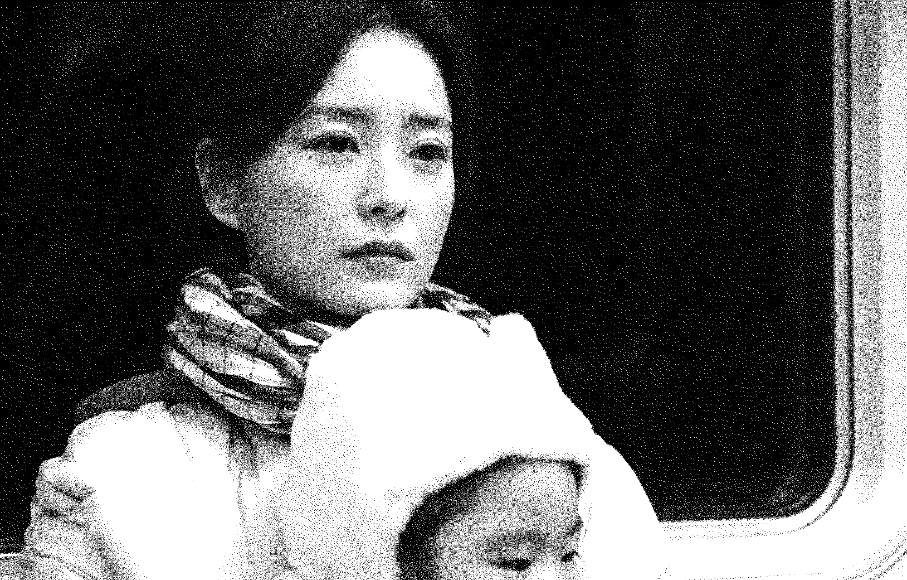

김지영
범인
82년생 김지영
KIM JI-YOUNG, BORN 1982
2019년
감독 김도영
드라마
118분
김지영 역
정유미


김지영의 첫 번째 대사
어, 아영아. 엄마 금방 갈게. 아영아. 어, 아. 꿀꺽, 아유 잘했어.
00:03:15


김지영의 마지막 대사
그녀는 1982년 4월 1일, 서울의 한 산부인과 병원에서 키 50센티미터, 몸무게 2.9킬로그램으로 태어났습니다. 출생 당시 아버지는 공무원이었고 어머니는 주부였습니다.
01:51:48